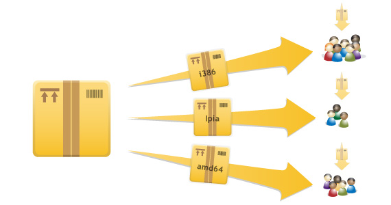

7 of 11
Distribute software from your own APT repository

Your Personal Package Archive (“PPA”) simplifies publishing your software. There’s no longer any need to ask testers on Ubuntu or Debian to compile your code from source. Just upload a source package and Launchpad will build and publish an installable binary in your own APT repository. Then publish the URL of the repository; users can install the latest version of your package with a single command, and automatically receive updates whenever you push a new version to the archive.
Automatic software distribution – with updates!
Pushing your software into a PPA is the best way to make sure it will reach a wide audience of Debian and Ubuntu users.

Instead of downloading individual packages, the archive enables your users to retrieve all your packages and their dependencies from a single reliable source. When you publish a new version of one your packages, Ubuntu notifies all of your users that an update is available, and it can automatically install the updated version for them if they prefer. This helps to keep all your users up to date, especially if you are using PPA’s to run a beta program and want your testers to run the very latest code.
Team PPAs
Teams can have their own package archives.

Anyone in the team can upload new packages to the team PPA, making it a great way for teams to publish software collectively. The Kubuntu project did just this to distribute their first builds of the KDE 4 environment. If you have a team of developers working on a set of related packages, consider setting up a team PPA as a way to simplify coordination across each of those pieces of software.
Multiple architectures
Packages uploaded to a PPA are built for multiple architectures, automatically.
Use your PPA to build packages for multiple architectures even if you don’t have the right hardware. Right now, Launchpad builds packages for the x86 and AMD64 architectures, and more will be added over time.